Visualizing bootstrap, centrality and difference results (base R)
Mohammed Saqr
Source:vignettes/visualizing-networks.Rmd
visualizing-networks.RmdPlotting networks and diagnostic results
psychnets provides a comprehensive set of visualization methods for estimated psychometric networks and their associated diagnostic analyses, facilitating both interpretation and statistical assessment. In addition to graphical displays, all estimation and diagnostic functions return tidy result objects that can be inspected programmatically, summarized numerically, or incorporated into downstream analytical workflows.
Psychometric networks are estimated from finite samples, and consequently every estimated edge weight, centrality measure, and derived statistic is subject to sampling variability. The diagnostic procedures implemented in psychnets quantify this uncertainty using non-parametric bootstrap resampling, case-dropping resampling, and permutation-based hypothesis testing. Each diagnostic returns a structured result object containing both the numerical results and the information required for graphical representation.
All graphical output is generated through dedicated
plot() methods implemented for the corresponding result
classes. These methods rely exclusively on the base R
graphics and grDevices systems and
therefore require no external visualization libraries. Throughout this
tutorial, each figure is produced by fitting a network, applying a
diagnostic procedure, and calling plot() on the returned
object. The following sections describe the interpretation of the
principal visualizations, including network plots, centrality measures,
bootstrap confidence intervals, difference matrices, pairwise difference
tests, case-dropping stability curves, and network comparison tests.
The data
The bundled SRL_GPT data hold responses from 300
learners on five self-regulated-learning constructs (CSU, IV, SE, SR,
TA), each a continuous subscale score.
head(SRL_GPT)
#> CSU IV SE SR TA
#> 1 5.307692 5.666667 5.777778 5.333333 4.00
#> 2 5.846154 6.444444 6.000000 5.777778 4.00
#> 3 6.615385 6.666667 6.222222 6.333333 3.25
#> 4 5.692308 6.555556 6.333333 5.555556 4.50
#> 5 4.384615 5.555556 4.888889 4.777778 4.00
#> 6 4.846154 5.444444 5.666667 5.111111 3.50Estimate a network
ebic_glasso() estimates a Gaussian graphical model whose
edges are partial correlations selected by the extended Bayesian
information criterion. The fitted object is the input to every
diagnostic below.
fit <- ebic_glasso(SRL_GPT)
fit
#> <psychnet> glasso network
#> nodes: 5 edges: 10 (undirected)
#> lambda: 0.00861 gamma: 0.5
#> optimality (KKT residual): 2.21e-10Centralities
net_centralities() computes node centrality measures
from the fitted network and returns a tidy table with one row per node
and one column per measure. Strength is the sum of absolute edge weights
at a node, expected influence is the sum of signed edge weights, and
betweenness counts the weighted shortest paths that pass through a
node.
ct <- net_centralities(fit, measures = c("strength", "expected_influence", "betweenness"))
ct
#> node strength expected_influence betweenness
#> 1 CSU 1.1984512 1.19845117 0.3333333
#> 2 IV 1.0012765 1.00127649 0.0000000
#> 3 SE 0.8492185 0.84921854 0.0000000
#> 4 SR 1.2314317 0.53172852 1.0000000
#> 5 TA 0.6082238 -0.09147935 0.0000000plot() for a psychnet_centrality table
draws one panel per measure. Under the default
type = "bar", each panel is a horizontal lollipop chart
whose nodes are sorted by their value, so the most central node sits at
the top of the panel and the length of each segment reads directly as
the centrality value.
plot(ct)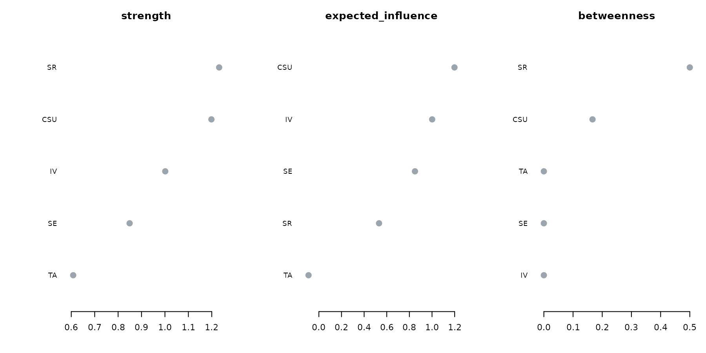
Under type = "line", plot() draws the
faceted centrality profile. The nodes share a single vertical order
across all panels, set by their mean standardized centrality, and each
panel keeps its own horizontal axis. A node that sits high in every
panel is central on every measure; a node whose position shifts between
panels is central on one measure and peripheral on another.
plot(ct, type = "line")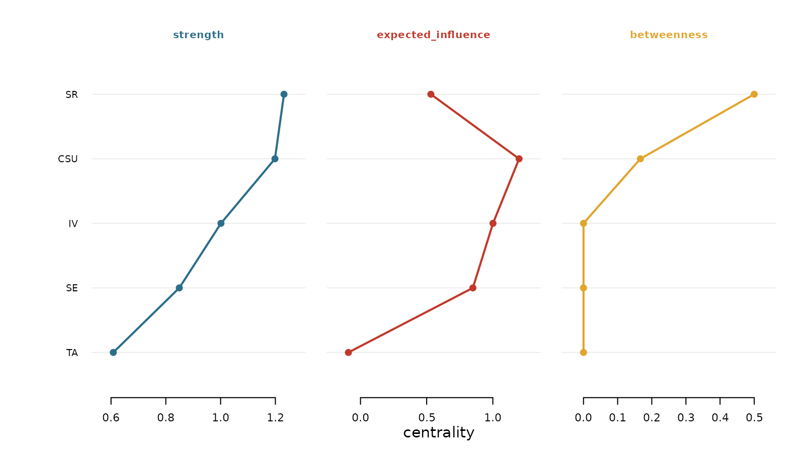
The scale argument controls the per-panel transform in
the line view. The default "raw" keeps each panel on its
own axis of centrality values, "z" centres each measure at
its mean and scales it to unit standard deviation, and
"relative" maps each measure to the interval from zero to
one.
plot(ct, type = "line", scale = "z")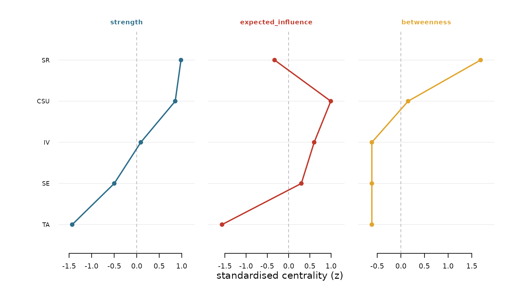
Bootstrap accuracy
net_boot() resamples the rows of the data with
replacement, refits the network on each resample, and records the
distribution of every edge weight and every centrality value across
resamples. The percentile confidence interval of each quantity is the
reported measure of its sampling accuracy.
plot() for a psychnet_bootstrap object
defaults to type = "edges", the edge-accuracy plot. Each
row is an edge, sorted by its observed weight; the point is the observed
weight and the segment is its bootstrap confidence interval. An edge
whose interval excludes zero is drawn in the emphasis colour, which
reports that the edge is present across resamples; an edge whose
interval crosses zero is muted.
plot(bs)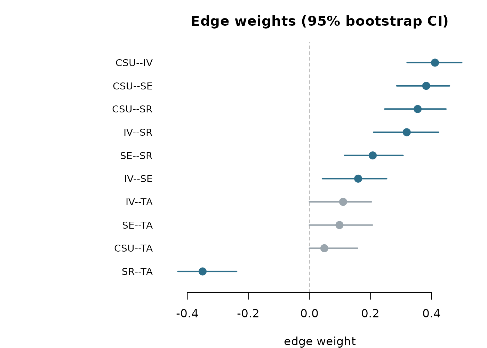
Under type = "centrality", plot() draws the
bootstrapped centrality intervals, one sorted panel per measure. A node
whose interval is wide relative to the spread across nodes is estimated
with low precision, so its rank among the nodes is uncertain.
plot(bs, type = "centrality")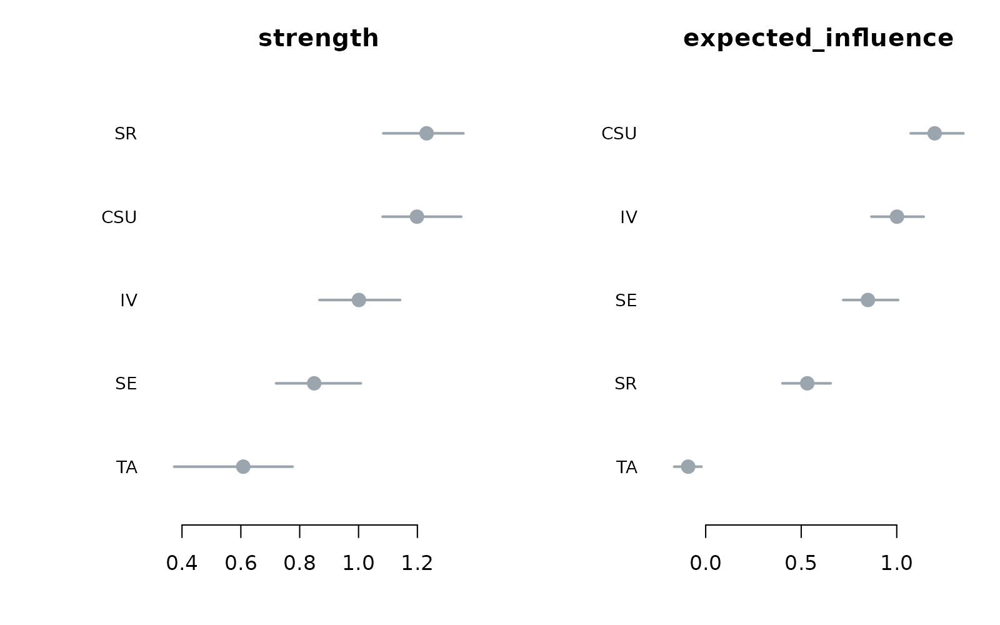
Under type = "edge_diff" and
type = "centrality_diff", plot() draws the
difference “significance box” matrix. The items sit on both axes,
ordered by their observed value from high to low. The diagonal carries
the observed value, shaded by its magnitude. An off-diagonal cell is
filled when that pair of items differs across the bootstrap, coloured
red when the row item is larger than the column item and blue when it is
smaller, and it is left faint when the pair does not differ. The stars
report the difference p-value.
plot(bs, type = "edge_diff")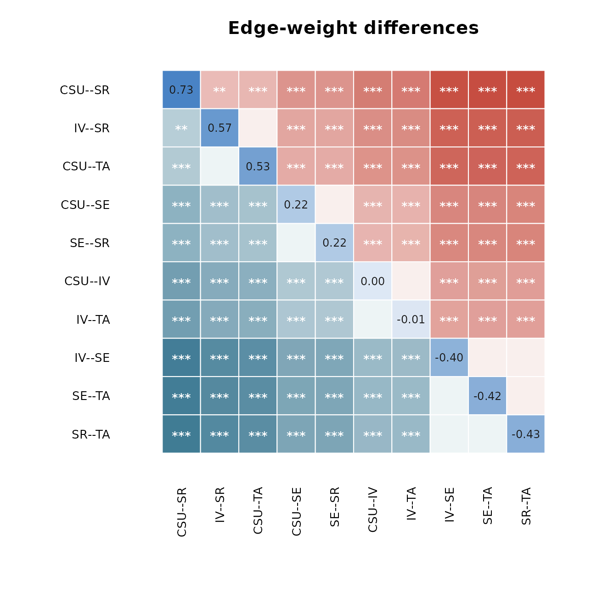
plot(bs, type = "centrality_diff", measure = "strength")
Difference test
difference_test() reads the retained bootstrap draws and
returns a tidy table of pairwise differences, with columns
item1, item2, the two observed values, the
observed difference obs_diff, its interval
lower and upper, the p_value, and
a significant flag set when the interval excludes zero.
dt <- difference_test(bs, type = "strength")
head(dt)
#> item1 item2 value1 value2 obs_diff lower upper p_value
#> 1 CSU IV 1.1984512 1.0012765 0.19717467 -0.01516075 0.43862886 0.080
#> 2 CSU SE 1.1984512 0.8492185 0.34923263 0.12605796 0.63527516 0.000
#> 3 IV SE 1.0012765 0.8492185 0.15205795 -0.09197932 0.36727209 0.208
#> 4 CSU SR 1.1984512 1.2314317 -0.03298049 -0.21134715 0.18144546 0.712
#> 5 IV SR 1.0012765 1.2314317 -0.23015517 -0.41550510 -0.04600301 0.024
#> 6 SE SR 0.8492185 1.2314317 -0.38221312 -0.54711539 -0.20825524 0.000
#> significant
#> 1 FALSE
#> 2 TRUE
#> 3 FALSE
#> 4 FALSE
#> 5 TRUE
#> 6 TRUEplot() for a psychnet_difference table has
two styles. The default style = "box" draws the same
significance-box matrix as above, which reads which pairs
differ.
plot(dt)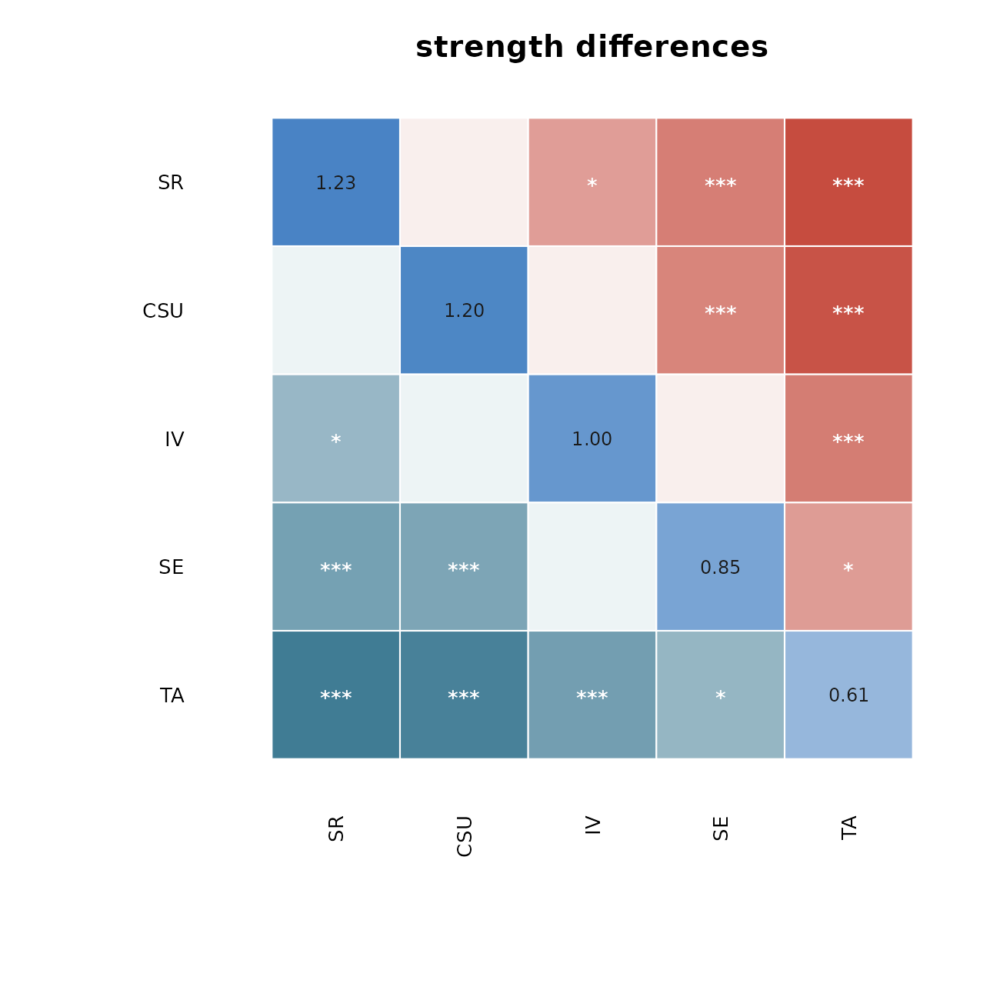
Under style = "forest", plot() draws a
forest plot with one row per pair. The point is the observed difference,
the segment is its confidence interval, the dashed line marks zero, and
a pair whose interval excludes zero is emphasised. This view reads
how large each difference is together with its uncertainty.
plot(dt, style = "forest")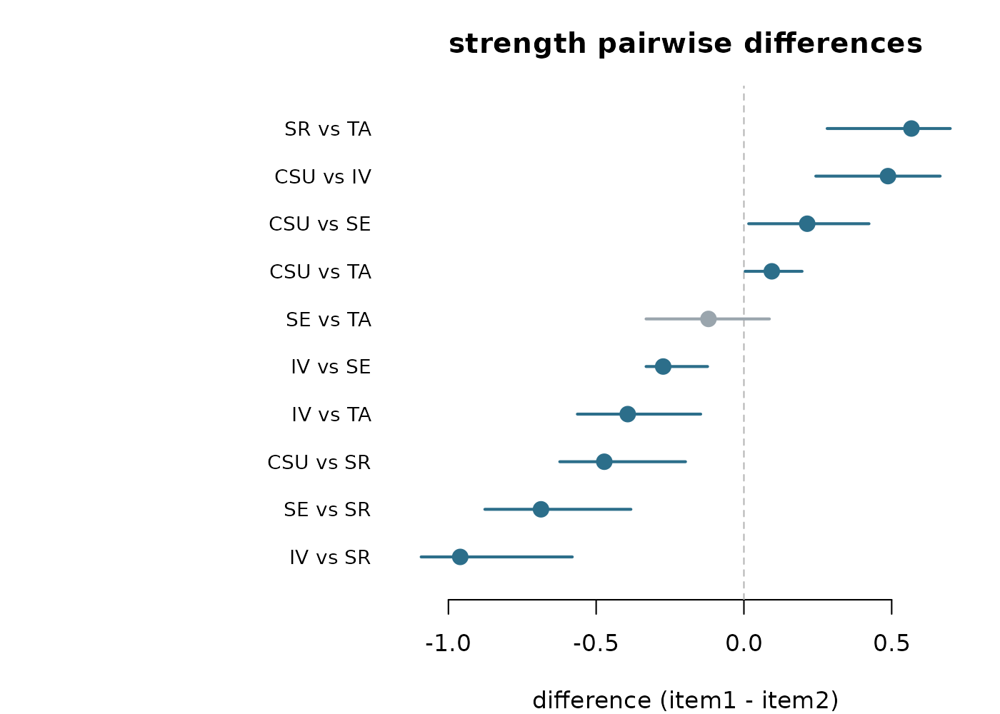
Case-dropping stability
net_stability() drops an increasing fraction of the
cases, refits the network on each subset, and correlates the subset
centralities with the full-sample centralities. The case-dropping (CS)
coefficient is the largest drop proportion at which the correlation
stays above the acceptance threshold with the stated certainty.
st <- net_stability(SRL_GPT, method = "glasso",
drop_prop = seq(0.1, 0.8, 0.1), iter = 25)plot() for a psychnet_stability object
draws the stability curves. The horizontal axis is the proportion of
cases dropped and the vertical axis is the mean correlation with the
full sample. Each measure is a line with a band of plus or minus one
standard deviation, the dashed line is the acceptance threshold, and the
legend reports the CS-coefficient for each measure. A curve that stays
above the threshold as more cases are dropped indicates a stable
centrality ordering.
plot(st)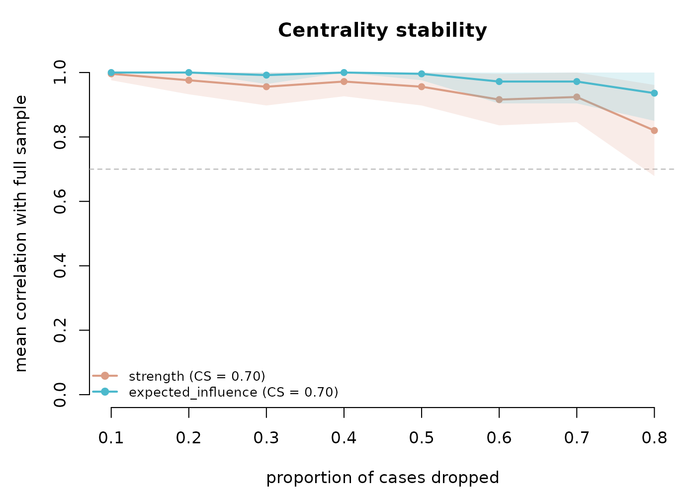
Network comparison test
net_compare() compares two networks by permutation. It
repeatedly reassigns the pooled cases to two groups at random,
recomputes the test statistic on each permutation, and builds the
distribution of that statistic expected when the two networks do not
differ. The global strength statistic (M) is the difference in summed
absolute edge weights, and the structure statistic (S) is the maximum
absolute edge difference.
cmp <- net_compare(SRL_GPT, SRL_Claude, iter = 250)plot() for a psychnet_nct object defaults
to type = "strength", the permutation null for M. The
histogram is the null distribution, the red line marks the observed
value, and the title reports the permutation p-value. An observed value
in the tail of the null provides evidence that the two networks differ
in global strength.
plot(cmp)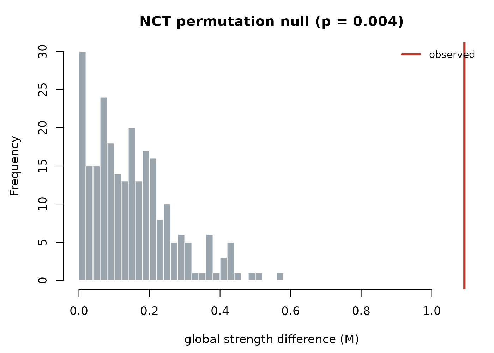
Under type = "structure", plot() draws the
same null for the maximum edge-difference statistic S.
plot(cmp, type = "structure")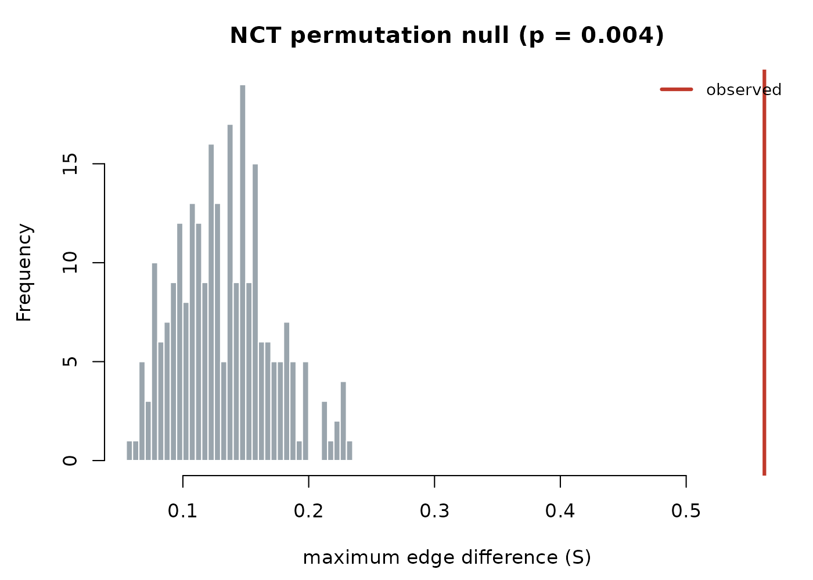
Under type = "edges", plot() draws the
observed absolute difference of each edge as a horizontal bar, coloured
by whether that edge differs significantly at the level set by
alpha. The title reports how many edges reach
significance.
plot(cmp, type = "edges")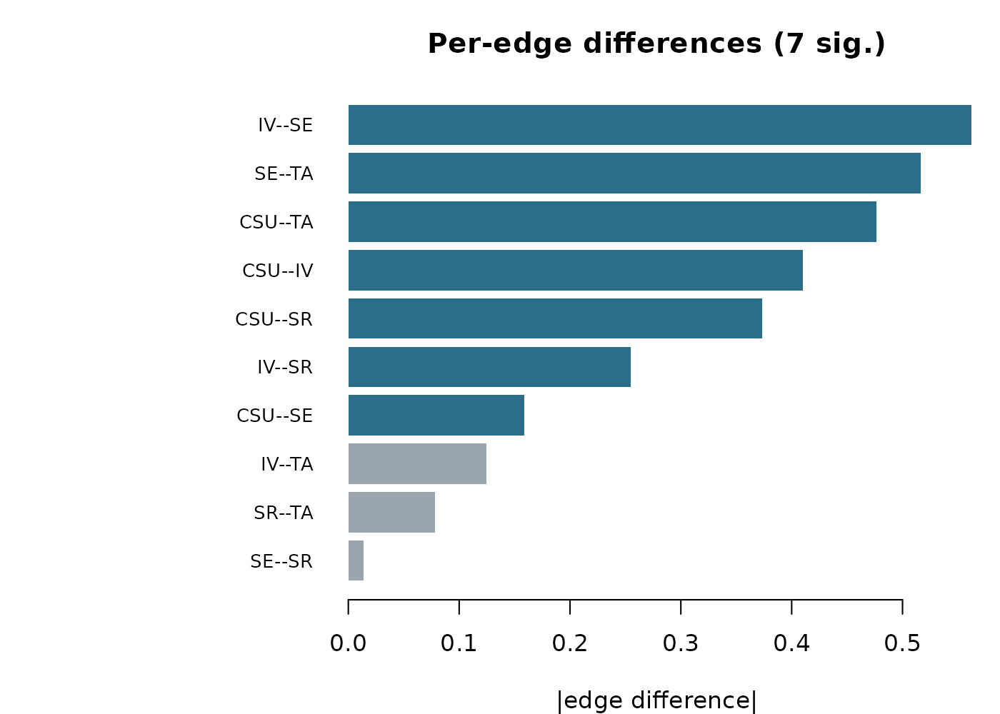
The plot methods at a glance
| Result object (verb) |
plot() options |
|---|---|
net_centralities() |
type = "bar" / "line";
scale = "raw" / "z" /
"relative"
|
net_boot() |
type = "edges" / "centrality" /
"edge_diff" / "centrality_diff" /
"predictability"
|
difference_test() |
style = "box" / "forest"
|
net_stability() |
one figure |
net_compare() |
type = "strength" / "structure" /
"edges"
|
Each figure above is drawn with base R alone. For the estimated
network itself, plot(fit) delegates to
cograph::splot(), covered in the companion vignette
Visualizing networks with cograph.